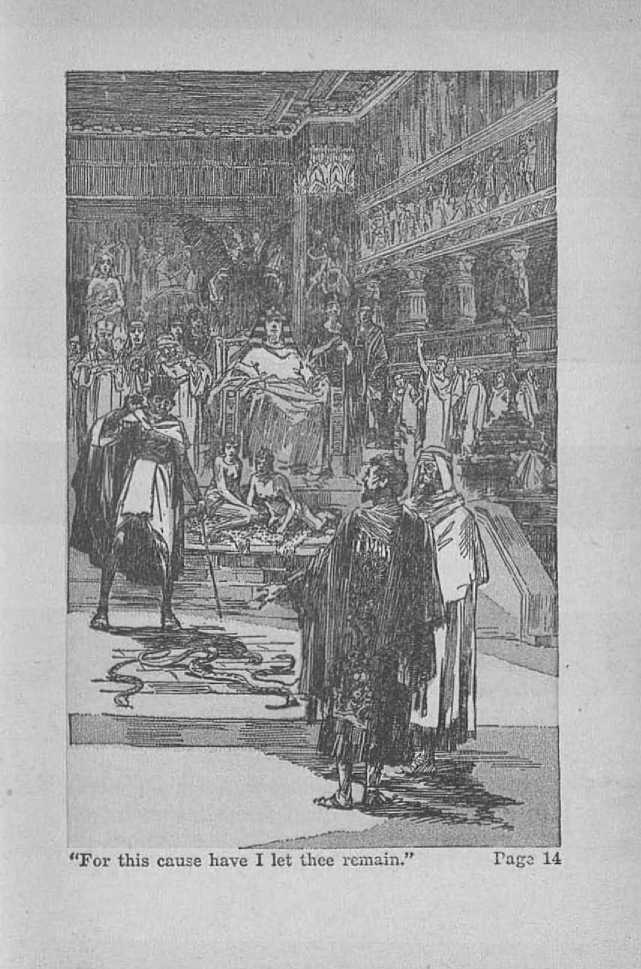
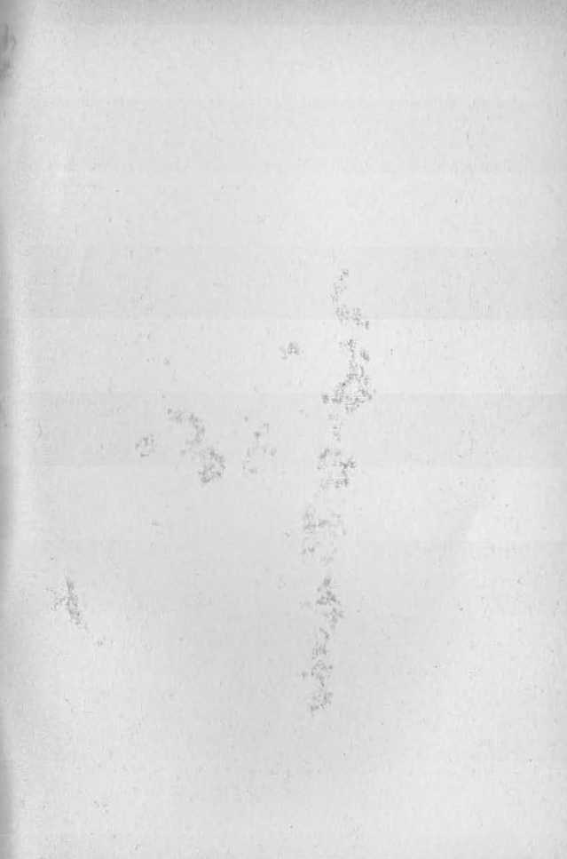

explained in
Seven Bible Treatises
by
J. F. RUTHERFORD
Page
3 Supremacy
11 Pharaoh
21 Prince of Peace
31 America’s End
33 Opposing God
47 Obeying
55 King’s Highway
•>--(•
Recognizing that supremacy has now become a world issue affecting the eternal life and happiness of our race Judge Rutherford makes this offering on the subject, for the good of the people.
What he here says finds full confirmation in fact and Scripture, as set forth more exhaustively in his other writings.
•>----------------------------------------------------------------------------<■
Copyrighted 1934 and Published by
WATCH TOWER BIBLE AND TRACT SOCIETY International Bible Students Association Brooklyn, New York, U. S. A.
Made in the United States of America
Branch Offices:
London, Magdeburg, Paris, Toronto, Strathficld, Cape Town, Berne, Copenhagen, Stockholm, and other cities.
HE WHO is supreme occupies the highest place of power, authority and government. It is important that the people know who it is that holds the place of supremacy in the universe. He who relies upon the truth of the Scriptures and the facts supporting them without hesitation says that Jehovah God occupies the place of supremacy and that he is therefore omnipotent, or the possessor of almighty power. There are clergymen who teach the people to the contrary.
Let the people understand that I have no desire or disposition to hold any individual up to ridicule. Nothing could be accomplished by fighting men. When, however, a man holds himself out to the people as a teacher of the Scriptures and publishes his conclusion upon the Scriptures, then his words become public property and should be considered without reference to whether they cast reflection upon that individual or not. The truth is far more important than the name or reputation of any creature.
The Toronto Star is one of the leading newspapers of Canada. A man who bears the title of ‘‘doctor of divinity”, and hence holds himself out as a preacher of God’s Word, regularly edits and publishes a religious page in that paper. I quote from that publication his words
3
in the issue of July 9, 1932: "Human goodness which we have all known . . . gives to me sufficient foundation for believing that the soul of the universe is also good. . . . Such a proof does not establish that this good Being is also omnipotent.” Then with approval in that article he quotes from his fellow writer concerning God these words:
"I no longer ask, Why does God allow injustice and misery? I say he is doing his best, and that it is my duty to help him.” The clergyman then adds these words: “There is something in this idea of God which I find very appealing, far too appealing to be lightly dismissed as fantastic and unorthodox. . . . The idea is so attractive that one feels there must be truth in it. ... If God is not responsible for the evil, who is? Nay, a more pressing question is, If God is not responsible for the evil, what place and authority has he in the universe at all? Is there another and very different God who is mightier than he?”
Should a man hold himself out as a representative and teacher of God’s Word when he has a doubt as to the supremacy of God? Let the people judge whether they wish to be guided by such leaders or not. My purpose is to show you that the above-quoted words are entirely unreliable and wholly untrue; and this I do that the people may know for their good who is the Almighty God.
Nothing could be of greater importance than to learn the truth concerning the origin and destiny of man and who holds the supreme power to determine all matters relating to man. It is lamentable, to say the least, that men who claim to be preachers of God's Word will quote from other men to support their conclusions and at the same time wholly disregard the Scriptures. Manifestly such men desire to exalt themselves in the eyes of the people. Jehovah foreknow and foretold that in these last days men would do these very things. Hence he caused to be written, at 2 Timothy 4:3,4 (TFcymouZ/?.) these words: ‘‘For a time is coming when they will not tolerate wholesome instruction, but, ■wanting to have their ears tickled, they will find a multitude of teachers to satisfy their own fancies; and will turn away from listening to the truth and will turn aside to fables.” This prophetic utterance, written nineteen hundred years ago, is being fulfilled by the clergymen at the present time. Concerning the same thing it is written, in 2 Peter 2:1,2: "But there were false prophets also among the people, even as there shall be false teachers among you, who privily shall bring in damnable heresies, even denying the Lord that bought them, and bring upon themselves swift destruction. And many shall follow their pernicious ways; by reason of whom the way of troth shall be evil spoken of.” Also, at 2 Timothy 3:1-5: “This know also, that in the last days perilous times shall come. For men shall be lovers of their own selves . ■ . ; having a form of godliness, but denying the power thereof; from such turn away.” The admenition is, not to do them injury, but to turn away from them and no longer be guided by such teachers.
Every person who believes that the Bible is God’s Word given to man for his instruction in righteousness well knows that the words denying the supremacy of Jehovah and giving honor to men are grossly blasphemous within the meaning of the Scriptures. The fact that Jehovah foretold such perils would come, and that we now find them, should cause the people to give strict heed to the truth of the Scriptures. At the same time Jehovah is now declaring that ‘the people shall Imow that I am God’; and this he does for their good.
What do the Scriptures say as to who is the supreme, almighty God? Moses wrote the first five books of the Bible under the inspiration and at the dictation of the Almighty God. To Moses he said: “I Am That I Am”; that is to say, God here declares himself as “I am from everlasting to everlasting”. He is the Almighty Creator, possessing all power. Psalm 90:1, 2 records: “Lord, thou hast been our dwelling place in all generations. Before the mountains were brought forth, or ever thou hadst formed the earth and the world, even from everlasting to everlasting, thou art God.”
The name God means that he is the Creator of all things; and concerning him it is written (Psalm 104:30-32, A.R.V.): “Thou sendest forth thy spirit, they are created; and thou renewest the face of the ground. Let the glory of Jehovah endure for ever; let Jehovah rejoice in his works; who looketh on the earth, and it trembleth; he touchoth the mountains, and they smoke.”
To Abraham Jehovah appeared and said (Genesis 17:1): “I am the Almighty God”; which means that his power has no limitation. It has remained for imperfect men in these last days to say to the people: “Instead of an all-powerfnl God I now conceive of a striving, suffering God, , . , and it is my duty to help him.” In contrast to that egotistical statement, and in answer to the claim that man could help God, I quote the words of the scripture found in Isaiah 40:13-15,17,18,22, 23, 25,26,28: "Who hath directed the spirit of the Lord, or being his counsellor hath taught him? With whom took he counsel, and who instructed him, and taught him in the path of judgment, and taught him knowledge, and shewed to him the way of understanding? Behold, the nations are as a drop of a bucket, and are counted as the small dust of the balance; behold, he taketh up the isles as a very little thing. All nations before him are as nothing; and they are counted to him less than nothing, and vanity. To whom then will ye liken God? or what likeness will ye compare unto him ? It is he that sitteth upon the circle of the earth, and the inhabitants thereof are as grasshoppers; that stretcheth out the heavens as a curtain, and spreadeth them out as a tent to dwell in: that bringeth the princes to nothing: he maketh the judges of the earth as vanity. To whom then will ye liken me, or shall I be equal? saith the Holy One. Lift up your eyes on high, and behold who hath created these things, that bringeth out their host by number; he cal loth them all by names, by the greatness of his might, for that he is strong in power; not one faileth. Hast thou not known? hast thou not heard, that the everlasting God, the Lord, the Creator of the ends of the earth, faintcth not, neither is weary? there is no searching of his understanding.”
These prophecies written in the Bible centuries ago and now being fulfilled conclusively prove that they were dictated by the almighty and all-wise One, to the end that men might know the truth. Jehovah foretold that these selfconstituted wise men would rise in these latter days, and we see this is coming to pass. At this point I invite you to examine Ezekiel’s prophecy bearing on the same thing, which prophecy Jehovah has recently revealed to his people.
In the eighth chapter of that prophecy Ezekiel is caused to describe the idolatry of the present-day wise men who claim to be teachers of religion. This prophecy, together with the facts showing its fulfilment, is set forth in Book One of Vindication. You will read that book with profit.
Ezekiel there represented Jehovah’s servant class and is caused to make an inspection of “Christendom” and of the teachings indulged therein by the elders or leaders. Modernists teach evolution, and not God, as the great author of creation, just as the prophecy foretold. The present is called the 'intellectual age’, and from the pulpits today are delivered lectures on what is termed “scientific matters”, while the teaching of Jehovah’s Word is entirely ignored. Making this inspection Ezekiel (8:16) says: “And he brought me into the inner court of the Lord's house; and, behold, at the door of the temple of the Lord, between the porch and the altar, were about five and twenty men, with their backs toward the temple of the Lord, and their faces toward the east; and they worshipped the sun toward the east.” The twenty-five men here described represent the leaders in “Christendom” and which leaders claim to be the house of God. These being self-wise men and indulging in the promulgation of their own wisdom are designated 'sun worshipers’. Modern theological schools graduate young men for the so-called “Christian ministry” who are taught to ignore the Bible, and these are called "the sunlight of the world”.
It must be admitted by every thinking person that the calling in question of the supremacy of the Almighty Jehovah God is a defamation of Iris name and a denial of his Word. Who would be interested in doing that thing? The answer is that Satan the Devil for centuries has busied himself in defaming God’s Word and name. He is the subtle foe of men, and by his wily and seductive methods has led men into darkness and made them blind to God’s Word and blind leaders of the blind people. The truth must now be spoken in order that the people may be awakened to the fact that we are in the evil day and in a time of darkness and that they may turn their minds to the Lord and his Word and gain a knowledge of the truth. Jehovah God lays upon his faithful witnesses the duty and obligation to call the attention of the people to the truth, and for this reason men and women exhibit to you books explaining the Bible.
The time for deciding the great question as to who holds the supremacy in the universe is here. Naturally Satan would try to becloud the issue and keep the people in the dark. Jehovah has declared that his witnesses must give this message and, when done, Christ Jesus, his agent, will completely destroy Satan’s organization. Such will demenstrate to all that Jehovah is the Almighty One and that there is none that can resist him. The destruction of Satan’s organization will be beneficial to mankind for the reason that it will prove that Jehovah is their true and everlasting Friend and the only source of life and happiness. His witnesses are now diligent in bringing to your attention these truths to show you that Satan the wicked one is the real inducer of infidelity amongst men, that Jehovah is the. Almighty God and is the God of justice, wisdom, love and power, and that those who come to know and serve him shall live everlastingly. Because of his loving-kindness to man Jehovah causes his Word to now be heralded throughout the land that all creation may know that he out of his gracious hand provides all things for the benefit and blessing of mankind.
EGYPT was the first world power. The ruler was called Pharaoh. among the illustrations of the Bible Pharaoh of Egypt and his official supporters are given a prominent part. The things emphasized in the Scriptures concerning Egypt are these, to wit, her political ruling power, her religion, and her commerce, all of which were carried on by the king and supported by his military power. These things are made prominent in connection with the Israel-
ites, the chosen and covenant people of Jehovah.
Egypt taken in its entirety pictures Satan's world power. The religion of Egypt was devilish, and hence against Jehovah God. This is proved by the words at Exodus twelve wherein Jehovah declared, "Against all the gods of Egypt I will execute judgment." Egypt pursued the policy of acquiring material wealth regardless of the rights of others. The king had a great army that supported him in this unrighteous work
Agreeable to the Biblical illustration, as it is now seen and understood, Satan has builded a great and powerful organization the active parts of which are, to wit, political, religious and commercial, and the most powerful of the visible part of this organization is the commercial power, or big business, by which Satan robs and oppresses the people. The religious element is found particularly in "Christendom” and fully supports the unrighteous rule of the world. The religious leaders have become tools of the commercial power and by their course of conduct manifest their belief in the proverb, “Money talks.”
Centuries ago Satan began this wicked rule in the earth, and has continued it until now, when wickedness has reached a climax. The ruling powers, namely, commercial, political and religious, apparently prosper while the people suffer much distress.
WHY PERMITTED
Jehovah God is just and righteous, and all his ways are right. Psalm thirty-three states: "The word of the Lord is right; and all his works are done in truth?’ Jehovah is the Almighty God. If Pharaoh and his world power pictured the Devil and his great organization, all of which are extremely wicked, why would the just, wise and all-powerful God permit the existence of such wickedness to continue and the people to suffer thereunder? Teachers of "organized religion” have answered this question in this manner, to wit: Because God wants the people, by the suffering from and the practice of wickedness, to learn proper lessons, that they may depart from evil. If that answer were true, then God would be responsible for the wickedness and suffering in the earth; and for this reason we know that the answer is incorrect. In support of this incorrect answer the following scripture (Exodus 9:16) is often quoted: “And in very deed for this cause have I raised thee up, for to shew in thee my power; and that my name may be declared throughout all the earth.” This scripture has been misunderstood and woefully misapplied. The misunderstanding of this text has caused much confusion of thought as to why God has permitted the Devil and his wicked organization to oppress the people.
The real and truthful answer to the question makes the entire matter clear and fully supports the scriptures proving that God is all-wise, allpowerful, just and loving, the Father of mercies and God of all comfort. Keep in mind that God created Lucifer a perfect creature who afterwards became Satan because of wickedness. Satan the Devil denied the truthfulness of God’s word and challenged him to put on earth men that would maintain their integrity and remain true and faithful to God for ever. Before all creation the Devil thereby put in dispute the word and name of the Most High. Jehovah could have exercised his supreme power and immediately destroyed the Devil, but, had he done so, the question of Jehovah’s word and his name could not have been fully settled in the mind of other creatures. Satan must have an opportunity to prove himself right, and his complete failure would be the best proof that he is wrong, the enemy of God and of all creation, and that Jehovah is the only true God. For this very reason Jehovah has permitted Satan to go the limit in wickedness, and from the very beginning declared his purpose to destroy Satan and his organization when that limit had been reached. The destruction of Satan and his organization will prove to all creation that Jehovah is right, and that will be a vindication of his word and name.
Pharaoh of Egypt with his powerful organization pictured or illustrated the Devil and his world organization. Jehovah sent his chosen people the Israelites into Egypt, where they resided and were greatly persecuted and oppressed by the Egyptian world power. Then Jehovah sent Moses to Egypt to deliver the Israelites and to vindicate his name. Moses there pictured Christ Jesus, the Head of Jehovah’s great organization, who within a short time will deliver the peoples of earth by destroying Satan’s world organization.
As Jehovah’s representative Moses stood before Pharaoh and told him that God would shortly destroy his power. Thus was pictured Christ Jesus, the antitypical Moses, now notifying the Devil and his subordinates in earth that within a short period of time Jehovah God will destroy that wicked organization and vindicate bis own great name. The correct rendering of the foregoing text, Exodus 9:16, is given in the translation by Rotherham and by Leeser. The Rotherham rendering is this: T have let thee remain for the purpose of showing thee my power, and that my name may be celebrated in the earth,’ According to Leeser: “But for this cause have I allowed thee to remain, in order to show thee my power; and in order that they [my •witnesses] may proclaim my name throughout all the earth.” This text proves beyond all doubt that God did not raise up the Devil or Pharaoh, hut both Pharaoh and the Devil voluntarily became wicked and that God has permitted the Devil, as he did Pharaoh, to remain and continue his wickedness until his own due time to destroy him and to establish righteousness in all the world.
Let all keep in mind that the most important question ever for determination is that of the supremacy and holy name of Jehovah. The time is at hand when he will do that 'great and strange work’, as he declares. Note that the latter part of the text just quoted says, "And in order that they [my witnesses] may proclaim my name throughout all the earth.” What is meant by the word "they”? The answer is, God’s covenant people. The primary application was to Jehovah’s faithful men of old. The complete application of the text is at the present time to Jehovah’s witnesses, who must in obedience to his command give this true witness in the earth. These are servants of Jehovah, just as Moses was a servant. As Moses served notice upon Pharaoh, the visible representative of Satan, so now Jehovah's witnesses must serve notice upon the rulers of the world, which world is under Satan. Moses before Pharaoh particularly pictured Christ Jesus. Moses was there accompanied by Aaron, 'who pictured or represented those who are now under the leadership of Christ Jesus acting as witnesses in the earth. Jehovah appointed Aaron the mouthpiece or speaker for Moses. Jehovah’s witnesses, who are faithful men and women now on earth, are the visible speakers in the name of Christ to serve notice upon the rulers and the peoples of the earth concerning God’s purpose to destroy Satan’s organization and to build a righteous government.
Since Jehovah has declared that he permitted the Devil to continue until the time of the vindication of his name, and the time has now come to vindicate his name, it follows that Jehovah’s witnesses must now proclaim these great truths to the peoples of the earth. They have no alternative but to go and tell the people that Jehovah is supreme and that he will vindicate his name, and that to him every knee shall bow.
Pharaoh and his official organization bitterly opposed Moses and Aaron; and likewise today we find the visible representatives of Satan on earth bitterly opposing Jehovah’s witnesses who are telling this message of truth to the people. As soon as Moses and Aaron had completed their testimony before Pharaoh and his organization the great death plague was inflicted upon the first-born of Egypt and followed by the complete destruction of the power of the nation. This is exactly in harmony with the words of Christ Jesus, the chief executive of Jehovah, who sends forth his faithful followers and commands them now to carry to the people the testimony concerning the kingdom and who says that as soon as this witness work is done there shall come upon the world the greatest trouble that has ever been known, and that it will be the last. This commandment is found in the twenty-fourth chapter of Matthew. In obedience to the Lord’s commandment faithful men and women now come to your doors daily bearing to you this testimony concerning God and his kingdom, and what shall resuit to the people.
The destruction of the wicked world will be a complete vindication of Jehovah’s name before all creation because it will show that there is no power that can successfully resist Jehovah God, and that his name is above all others, that he is the Most High, and that his Word is absolutely true. Then the way will he open for the people to receive and clearly and plainly understand the truth as set forth in the Scriptures and to know that all their blessings must proceed from the all-wise and loving God. The people will receive complete relief from their distress, and those -who obey the Lord and seek to do right will receive the blessings of everlasting peace, prosperity and happiness.
The reason why God has permitted wickedness in the world is therefore clearly seen. The end of that wickedness is also now seen. This is a time of the greatest importance for the people. In view of the fact that the great battle of Armageddon is just ahead, God commands his witnesses now to say to the people, as set forth in Zephaniah two: ‘Seek meekness and righteousness, and it may be that you shall be hid in the day of Jehovah’s righteous indignation.’ The only way you can seek meekness and righteousness is to know what God’s Word says about it and then take your stand on the side of Jehovah.
Let all those who oppose Jehovah’s witnesses take notice now that Pharaoh and his supporters, opposing God and his faithful witnesses Moses and Aaron, suffered destruction, which foretells that those who now willingly oppose Jehovah God and his faithful witnesses in the earth shall likewise suffer destruction. Let those who are desirous of the truth take their stand on the side of Jehovah and carry that message of truth to others, that they too may know that there is only one true and almighty God.
The blessing of the people with peace, prosperity and life can come only after wickedness has been destroyed in all the earth. Jehovah’s great prince and ruler is Christ, the Prince of Peace, and of and concerning him it is written that he shall rule in righteousness, and that all men who hear and obey the laws of his kingdom shall be fully restored to perfect conditions and live for ever on the earth. No effort is now made to induce the people to join something. The only purpose of bringing this message of truth to you is that you might know the truth as set forth in the Word of Jehovah God.
A PRINCE is a son of a king or menarch. Jehovah God is the great King and absolute Monarch of the universe. His Word makes known two mighty sons who together sang an anthem of praise to the great God at the time of the laying of the foundation of the earth. (Job 38: 7) One of these sons is now known as Satan the Devil. The other is God’s beloved Son Christ Jesus, who is his chief executive officer. At Ephesians two Satan the Devil is called the 'prince of darkness’, who for centuries has ruled the world in wickedness. Originally he was a prince of light, but he became wicked and has kept the people in darkness, and hence in ignorance of the truth, for centuries past. Satan is the primary instigator of war, trouble and suffering, and hence is the arch enemy of God and of man.
“The Prince of Peace” is one of the titles which Jehovah has given his beloved Son Christ Jesus. Soon he will establish everlasting peace on the earth, and this he will do as the prince and servant of Jehovah God. It is written, in Ecclesiastes 3:1, 8, that 'there is a due time for everything, a time of war, and a time of peace’. Why should Jehovah fix a time for war, and for peace? The Scriptural answer is, because Satan has entrenched the forces of the world in wickedness and nothing will dislodge his forces but war righteously prosecuted at the hand of Jehovah God through Christ Jesus. That war, in the Bible, is called the battle of Armageddon or the battle of the day of God Almighty; and in that war the prince of darkness and his wicked organization will be completely destroyed. At Psalm 46:8-10 (A.R.V.) it is written: “Come, behold the works of Jehovah, what desolations he hath made in the earth. He maketh wars to cease unto the end of the earth; he breaketh the bow, and cutteth the spear in sunder; he burnetii the chariots in the fire. Be still, and know that I am God: I will he exalted among the nations, I will be exalted in the earth.” “Chariots” and ‘horses’ here used symbolize war equipment. Jehovah says concerning the work of the great Prince of Peace, at Zechariah 9:10, the following: “And I will cut off the chariot from Ephraim, and the horse from Jerusalem, and the battle bow shall be cut off: and he shall speak peace unto the [nations]: and his dominion shall be from sea even to sea, and from the river even to the ends of the earth.”
The wicked organization that rules the earth is made up of Big Business, politicians and false religious leaders, and which organization is under’ the control of Satan. There will never be any peace on earth and good will amongst men until that wicked organization ceases to exist. The very purpose of the great war of
God Almighty is to cleanse the earth of wickedness. Then peace and righteousness, like a mighty river, shall flow unto the people and they shall he made glad.
Satan well knows that the honest people of earth are sick and tired of war and want peace. To deceive the people and to turn them away from God and his Word and kingdom, Satan now causes his earthly representatives to make certain peace treaties or pacts and to bring them before the people as remedies; but these are merely makeshifts. Big Business and politicians promulgate these peace treaties, and the clergy and the newspapers, which are the propaganda instruments of Satan’s organization, herald such treaties to the people and designate them the saviors of the world from war. The treaty made at Paris in 1928 is called "The general pact for the renunciation of war”. That treaty has not prevented and will not prevent war. All ruling powers of the earth are moved by greed and covetousness. Let the people take note of what Jehovah says of and concerning the selfish men who rule the earth. It is written, in Jeremiah 6:13,14: "For from the least of them even unto the greatest of them every one is given to covetousness; and from the prophet even unto the priest every one dealeth falsely. They have healed also the hurt of the daughter of my people slightly, saying, Peace, peace: when there is no peace.” Lasting peace will come to the earth, because Jehovah God has •promised it and he always fulfils his promises. Those who now learn and give heed to the Scriptures see what is coming and recognize that deliverance is near at hand. From the very beginning of wickedness Jehovah announced his purpose to let Satan go his limit and that then he would destroy Satan’s power and establish peace on earth. He foretold that his beloved Son Jesus would come to earth as the Savior of men and that he would be horn at Bethlehem. Centuries after that prophecy was written Jesus was born at Bethlehem; and to the faithful shepherds, who were the appointed witnesses of Jehovah and whom he had stationed at Bethlehem, God by his angels said: ‘Behold, I bring you good news of great joy, which shall be unto all people; for unto you is born this day, in the city of Bethlehem, a Savior, which is Christ the Lord.’ “And suddenly there was with the angel a multitude of the heavenly host, praising God, and saying, Glory to God in the highest, and on earth peace, good will toward men.”—Luke 2:10-14.
That great prophecy sung by the host of angels nineteen hundred years ago is now about to have fulfilment. Jehovah has placed his beloved Son Christ Jesus upon his throne to rule the world, as thus stated at Psalm two. His next great act wall be to dash to pieces Satan’s wicked organization that oppresses mankind. Following that, peace, like a mantle of light, will cover the earth and good will toward men will be established for ever. The great and righteous Ruler of the world, Christ Jesus, is the Prince of Peace. Concerning him and his work Jehovah has said, in Isaiah nine: ‘The government . shall be upon his shoulder; and he shall be called the Mighty Counsellor, the everlasting Father, the Prince of Peace, and of his government and peace there shall be no end.’
The great battle of God Almighty, which shortly will be led by Christ Jesus, will convince all creation that Jehovah is the only true God. The people will then learn that Christ Jesus, the Prince of Peace, is the Wonderful Counselor, because he will teach them and lead them in the right way and no more will ignorance and crime afflict the earth. In addition to his other titles which the Prince of Peace bears he will be known as the Everlasting Father, because it is by and through him Jehovah will give life to the obedient ones of mankind. (Romans 6:23) The title Prince of Peace will ever remain with God’s beloved Son, because it is written of him, at Nahum 1: 9, that he will make an utter end of wickedness in the world and that afflictions of the people shall not rise again.
The great desire of the peoples of earth today is for peace and prosperity, that they might enjoy the things that God has created for them. The mighty Prince of Peace will bring even more than the fondest desire of any honest lieart. It is written, in Psalm 37:9-11: “For evil doers shall be cut off; hut those that wait upon the Lord, they shall inherit the earth. For yet a little while, and the wicked shall not be; yea, thou shalt diligently consider his place, and it shall not be. But the meek shall inherit the earth, and shall delight themselves in the abundance of peace?’
As further proof that peace will be everlasting, the psalmist says (72: 7): “In his days shall the righteous flourish; and abundance of peace so long as the moon endureth.” Concerning those who obey the law of God’s kingdom it is written, in Isaiah 32:17; 18: “And the work of righteousness shall be peace; and the effect of righteousness, quietness and assurance for ever. And my people shall dwell in a peaceable habitation, and in sure dwellings, and in quiet resting places.”
Many texts of the Bible are written in symbolic language. Assyria symbolically pictured the political men of the world, while Egypt symbolized the commercial people of the world. Babylon particularly pictured the religious element. The Scriptures show that Babylon, that is to say, the religious element, particularly “Christendom”, will never be restored, but that some of the men of the political and commercial element will be restored. The assigned reason for this is that the Devil has used religionists to defame the Word and name of Jehovah God and at the same time has misled political and commercial men into his trap and into darkness.
All men instinctively worship something, and the religions leaders have tanglit the politicians and the commercial rulers that they could with propriety consult spirit mediums and receive proper instruction from such wicked spirit creatures. Thus they have defamed God’s name and allied themselves with the Devil. The religious teachers have induced men to trust in these fallen gods, and concerning such Jehovah said: 'Against all the gods of Satan’s organization I will execute judgment,’ At Isaiah 19: 22, 23 it is written: "And the Lord shall smite Egypt; he shall smite and heal it: and they shall return even to the Lord, and he shall be entreated of them, and shall heal them. In that day shall there be a highway out of Egypt to Assyria; and the Assyrian shall come into Egypt, and the Egyptian into Assyria; and the Egyptians shall serve with the Assyrians.” Thus the Lord foretold how the Prince of Peace will lead and restore those who come to know and to obey his righteous laws.
The Prince of Peace will open the way for the people to return to Jehovah God, which way is known in the Scriptures as a great "highway”. Then all who devote themselves obediently to the Prince of Peace shall return to God and live. Today the leaders of religious organizations oppose the truth and induce politicians and commercial men to believe that those who are serving as witnesses of Jehovah are enemies of mankind and should be punished as wrongdoers. Jehovah will vindicate his witnesses in due time. These witnesses of Jehovah who come to your door with the message of good news concerning the Prince of Peace and his government are doing so in obedience to the commandment of God, and they delight to obey his commandments. What they are doing is by the grace of God and will result in good to the people who hear their message. To his witnesses God says, at Isaiah 62:10: “Go through, go through the gates; prepare ye the way of the people; cast up, cast up the highway; gather out the stones; lift up a standard for the people.”
The “gates” here mentioned represent an entrance to the kingdom of God. His witnesses have their faces turned that way and point the people to his kingdom. By telling the truth they 'prepare a way before the people’. The "highway” is the right way by which the people must travel. By 'gathering out the stones’ these witnesses are pointing to God’s Word and thus removing from the minds of the people the false doctrines by which they have long been deceived. These faithful men and women, as Jehovah’s witnesses, are holding forth his banner of truth, and thereby they are lifting up Jehovah’s standard to the people as commanded. When they come to your door with books ex-
“Gather out the stones.”
Page 28
plaining God's purposes, know that they are coming as your friends and helpers and that it is Satan’s agents that oppose their work. Receive the message they bring to you, and then the responsibility is upon you to act in whatsoever way you may see fit,
When the peoples come to a knowledge of Jehovah’s government under the righteous Prince of Peace they will diligently seek the way to go to Zion, which is God’s great organization. Concerning this it is written, at Jeremiah 50: "They shall ask the way to Zion with their faces thitherward, saying, Come, and let us join ourselves to the Lord in a perpetual covenant that shall not be [broken].” Those who now are hearing and obeying the truth are receiving these blessings in advance of others. Happy will be all such who take their stand now on the side of the Prince of Peace and the great Jehovah God.
One who carefully studies the Word of Jehovah will receive untold blessings. Judge Rutherford’s numerous publications, which have reached the circulation of over 150,000,000 copies in a short period of time, have brought to many people of many nations comfort and hope, because of the clear, understandable way Judge Rutherford puts the truth.
A 36-page booklet describing each one of Judge Rutherford’s books will be sent free to any inquirer. The Watch Tower, 117 Adams St., Brooklyn, N. Y.
AMERICA has taken the lead in world governments. Together with Britain, these two nations form the two great pillars of the seventh world power. The natural resources of America make her the richest nation under the sun, and at the same time ten million or more of her people are without employment, suffering distress and perplexity, while the governing forces continue to heap burdens upon the masses. The question is now often propounded by people who think, Can the American government endure? The correct answer is, It cannot, but soon will end. I will state the reasons for this conclusion and let you decide for yourselves.
In the early days of the nation some of America’s statesmen loved their country and the people and gave honor to God as best they knew. Today there is no true patriotism in America, and no sincere devotion to the Lord amongst those who rule. Public office is no longer a public trust, but is a private grab.
Commercial giants and professional politicians work together to control the people, and the religious leaders give them their full support, and all three elements dishonor Jehovah’s name. Big Business has no regard for the rights of the people, and, while public officials are 31 supposed to serve the people, they in fact serve the private interests of selfish commercial power.
By the manipulation of the finances of the nation Big Business has acquired title to almost all the real estate. What remains in the hands of the commen people is rapidly being taken away from them because of their inability to pay exorbitant taxes, and a high rate of interest on mortgages. The banking institutions, the railways, and other means of transportation, the telephone and telegraph facilities, the mines, the factories, and the great mercantile establishments, all are owned or controlled by Big Business. The Power Trust harnesses the natural resources of the earth and compels the people to pay exorbitant prices for the use of light and power.
The army and the navy and war equipment are kept and maintained, not for the purpose of repulsing a foreign foe, but for the protection of selfish commercial interests. Big Business employs the most astute lawyers of the land and improperly influences the courts. The same selfish power owns or controls the newspapers and the magazines and other means of carrying forward their propaganda work which enables them to deceive and control the people. The great corporations employ many men and figuratively put a hook in their nose and compel them to do the bidding of a few selfish men or else starve. Big Business has destroyed real manhood in America. In 1917 Big Business put the American nation into the World War and caused its propaganda sheets and its clergymen to sound the slogan throughout the land, to wit: “The war will make the world safe for democracy.” Everybody knows that that slogan was and is false and that democracy has perished from the earth. Millions of young men went into that war, and more than 100,000 of them today sleep beneath the sod of France. Multitudes of others returned with broken bodies and without means of support. In a time of great depression and real need both for themselves and for their children the ex-soldiers send their representative to Washington to ask the government for help. This help is denied and they not only receive a rebuff from the government but are driven out from the capital by the military power at the behest of the highest official in the land. They asked for bread and received a stone; they asked for meat for themselves and their families and the response is cold steel and burning shacks. Although the American government spent millions of money in recent years to help the people of foreign nations, today little is done for her own suffering citizens.
Millions of American money was lent to other nations and Big Business bought the bonds. Even if those nations now repudiate their debts the laborer of America must pay the bondholders. The farmer, the fruit grower, and stock raiser, work early and late and receive practically nothing for the fruits of their labor. Many, in view of these unhappy conditions, are asking the question, Can the American government endure?
Will the government fall in a revolution by her citizens? No, there is no man to lead a revolution successfully; and since Big Business controls America, including the navy and the army, arevolution is doomed to failure before it starts^ The people of America are confronted with the greatest crisis of the ages. The reason for this is set forth in the Bible, written centuries ago for the very purpose of informing the people of the present time concerning the cause of their trouble and the sole power that will bring them relief. In obedience to God’s commandments humble men and women who love God now go from house to house to inform the people of these facts as they are set forth in the Scriptures. At the instance of the ruling powers, and particularly the religious element, many of these faithful witnesses of Jehovah are interrupted, persecuted, arrested and imprisoned. Although these witnesses of Jehovah are trying to help the people, the agencies of Satan, who is the great invisible ruler of this world, are trying to destroy these witnesses.
Is there no relief for the people? Shall the selfish and cruel powers that control continue to oppress the people without limit? What shall the people do in this hour of distress? I appeal to the people to be calm and learn what Jehovah God has in store for them, because his is the only means of relief. Jehovah takes note of the suffering and distress of the people, and he has heard their cries.
By his Word the great Jehovah now speaks to the rich and oppressive ones who rule behind the throne of visible power, and says to them, as recorded in James 5:1,2: "Go to now, ye rich men, weep and howl for your miseries that shall come upon you. Your riches are corrupted, and your garments are moth-eaten.” How true is that statement of the Lord’s Word applied at this day! With all their wealth.they are in fear and in perplexity, and they weep and howl because of the miseries that have now come upon them. Further addressing them Jehovah says (James 5:3): "Your gold and silver is cankered; and the mst of them shall be a witness against you, and shall eat your flesh as it were fire. Ye have heaped treasure together for the last days.” Heretofore I have pointed out from the Bible that we are now in the last days of Satan’s rule and that God’s kingdom is at hand. The millions of people who once produced the wealth that others now have, and who are now without employment and without money, are crying for help. They are not crying to God, because the agents of Satan have kept them blind concerning the truth of God. They are crying because they have been robbed and defrauded, and their burdens are unbearable. Yet Jehovah hears their cries, even as he heard the cries of the oppressed in Egypt, and now further addressing the oppressors he says (James 5:4,5): “Behold, the hire of the labourers who have reaped down your fields, which is of you kept back by fraud, crieth: and the cries of them which have reaped [and have fought your battles] are entered into the ears of the Lord of [Battle]. Ye have lived in pleasure on the earth, and been wanton; ye have nourished your hearts, as in a day of slaughter.”
Satan’s army is assembling against Jehovah’s army, and the battle of Armageddon is near. Big Business and political rulers are fully supported by the religious organizations, and together these form the visible power of this world. No one can doubt that fact. The clergy claim to represent Jehovah, but they do not. Fox’ the sole purpose of enabling the people to hear these great truths discussed from the Bible, recently I declared over the radio that the clergy represent Satan and not Jehovah, and I invited them to bring forth their ablest man among the clergy to debate by radio these great questions, offering to pay half the expense myself. This challenge they have studiously ignored. The people are the ones that lose the opportunity to hear. If the clergy deny that they represent Satan, let them come forth and prove it. Failing so to do, let them no longer claim to be preachers of God’s Word.
Jehovah ■will no longer permit Satan’s wicked forces to hide behind the skirts of religious leaders. By his prophet Ezekiel (29:3-5) he says: 'I am against you and all your organization, and I will destroy you.’ (See Vindication, Book Two.)
Some men advocate various schemes of relief, such as communism, revolution, and other deeds of violence. God by his prophet now addresses them and tells them to stand still and watch what he shall do. (2 Chronicles 20:15-17) He says, at Zephaniah 3:8: “Wait ye upon me, saith the Lord, until the day that I rise up to the prey; for my determination is to gather the nations, that I may assemble the kingdoms, to pour upon them mine indignation, even all my fierce anger: for all the earth shall be devoured with the fire of my jealousy.” Jehovah is the God of battle, and, the time having arrived for the vindication of his name, he will fight the battle of Armageddon for his own name’s sake; and it will result in the complete destruction of oppressive powers and the deliverance of the people. There is no need to seek for or look for any other way out of the dilemma, because there is none other. Those who love God ■would not wish to find any other, because they know what Jehovah does is done right and in the interest of righteousness.
The American government has been weighed in the balance and found wanting. It cannot endure. Together with all other nations, it soon shall fall. Such fall will be in spite of everything Big Business, politicians and clergymen, the military and the “strong-arm squad”, and the Devil and all of his hosts can do to hold together the oppressive rule. It must and will fall because Jehovah God’s kingdom is here. Hasten now to take shelter under Jehovah’s kingdom.
Under the righteous rule of Jehovah’s kingdom you will enjoy the fruits of your labor. Your wives and your babies will be housed and fed, and you will dwell in peace and happiness and health upon the earth for evermore. (Micah 4: 2-4) I bid you, therefore, to be calm, refrain from violence, trust in Jehovah God, and wait for the salvation and peace and endless joy that his kingdom will bring to the now suffering millions who are obedient to him. The kingdom of God is solely your hope. Your greatest friend is JEHOVAH GOD.
EVERY PERSON who believes that Jehovah is God and that Christ Jesus is the Savior of the world must believe that the Bible is God’s Word and that it is the truth because Jesus said so. Jesus spoke with authority, and just before he died he solemnly and forcefully declared that the truth of God’s Word is the only possible way to sanctify men. The Bible abounds with proof that Jehovah God sent Jesus to earth and that he always spoke the truth as he was directed to do by Jehovah. The words of Jesus therefore constitute commandments of Jehovah given to man and which must be faithfully obeyed.
One of the clear-cut, plain and forceful commandments that Jesus spoke appears in Matthew 24:14, to wit: '‘Tins gospel of the kingdom shall be preached in all the world for a witness unto all nations: and then shall the end come.” The words “this gospel” clearly show that a specific message of good news must be preached or told to the people. The disciples of Jesus had just propounded to him this question: ‘Master, what shall be the proof of thy coming and of the end of the world?’ among other things Jesus answered that such period of time would be marked by the nations and kingdoms of the world engaging in a great war, followed quickly by famines and pestilences. That prophecy began to have its fulfilment in the autumn season of 1914. Many other corroborative scriptures show that in that same year Jesus took his power and began his reign, and cast Satan out of heaven to the earth; and according to his prophecy much distress and perplexity would follow. Everybody sees distress and perplexity now on the earth in fulfilment of this prophecy. The coming to pass of these events in fulfilment of prophecy constitutes good news to every one who loves God and righteousness and who desires to see his kingdom and his will done on earth. “Gospel” means good news; hence the commandment given by Jesus is the authoritative word of Jehovah that this good news must be told to the people.
This good news or gospel is to be preached to the nations as a witness. Other commandments from Jehovah's Word in corroboration thereof appear in the prophecies of Isaiah and Ezekiel in which Jehovah commands all who are his witnesses to go and tell the people that Christ’s kingdom is here and that shortly Satan’s wicked organization shall go down and that then the people will be relieved of their burdens and receive God’s blessings. This means also that God’s judgment upon the nations has begun to be executed.
What shall those who have agreed to do God's will do when they hear of this commandment from the Lord? Jesus answers: If you love God you will obey his commandments.’ In 1 John 4:17,18 it is written that those who love God will prove it by being fearless and bold in the day of judgment to tell the people the truth by preaching this gospel of the kingdom. Those men and women, therefore, who come to your door bringing to you ‘this good news of the kingdom’ and showing you where in your Bibles you can find these precious truths, are doing so only in obedience to God’s commandments. Could it be pleasing to God, therefore, for anyone to oppose them or illtreat them? This question finds the proper answer in the Bible.
Before giving the answer I briefly recount some of the facts well known to exist. In many places the pastors or priests of some congregations have caused a number of these men and women who are serving as God’s witnesses to be arrested on a charge of peddling without a license. These have been brought into court, fined, unkindly treated, and imprisoned. Officers of the law are influenced by the preachers to take such action against these men and women who are doing nothing but preaching the gospel as they believe God has commanded it. Shortly after the crucifixion of Jesus Iris disciples went from place to place preaching the truth. At that time the priests and clergymen had much influence and power in Palestine. In the fifth chapter of Acts an account is given of the apostles’ preaching, and with interference in their efforts, and among other things these words are used, which I quote: “Then the high priest rose up, and all they that were with him, (which is the sect of the Sadducees,) and were filled with indignation, and laid their hands on the apostles, and put them in the common prison. . . .
And when they had brought them, they set them before the council: and the high priest asked them, saying, Did not we straitly command you that ye should not teach in this name? and, behold, ye have filled Jerusalem with your doctrine, and intend to bring this man’s blood upon us.” The officers before whom the apostles were brought then consulted together about the advisability of killing these disciples of Jesus. In that council was a lawyer named Gamaliel, and he addressed the court in these words: “Ye men of Israel, take heed to yourselves what ye intend to do as touching these men. For before these days rose up Theudas, boasting himself to be somebody; to whom a number of men, about four hundred, joined themselves; who was slain; and all, as many as obeyed him, were scattered, and brought to nought. After this man, rose up Judas of Galilee, in the days of the taxing, and drew away much people after him: he also perished; and all, even as many as obeyed him, were dispersed. And now I say unto you, Refrain from these men, and let them alone: for if this counsel or this work be of men, it will come to nought; but if it be of God, ye cannot overthrow it; lest haply ye be found even to fight against God. And to him they agreed; and when they had called the apostles, and beaten them, they commanded that they should not speak in the name of Jesus, and let them go. And they departed from the presence of the council, rejoicing that they were counted worthy to suffer shame for his name. And daily in the temple, and in every house, they ceased not to teach and preach Jesus Christ.”
Today history is repeating itself; and the answer to the question, Is it proper to oppose God’s witnesses? is found in the scripture which I have just quoted.
No man or court has a right to interfere with any priest, pastor, or other clergyman in preaching what he believes, whether he so preaches in a church building or on the streets, because the law of the land and the law of God grant him full liberty so to do. It is entirely proper and lawful and right for anyone to point out to the people that what is being preached is not in harmeny with the Bible and then let the hearers determine what they wish to believe. The same rule that applies to priests and other clergymen also applies to men and women who go from door to door to give their version of what the Bible has to say. If these men and women are not God’s witnesses their work will accomplish nothing. If they are God’s witnesses, then he who opposes or interferes with them is fighting against God; and it is quite certain that in his own due time God will fully recompense those who do fight against him.
If it is true that the world has ended and Christ’s kingdom is at the door, as Jesus declared ; that God has set Christ Jesus upon his throne and that he has commanded his witnesses to go and tell these good tidings to the people, then it would be well for all to heed what God has to say about it. In Psalm two he says: ‘Be wise now, therefore, ye rulers; be instructed, ye judges of the earth; serve the Lord with fear, and rejoice with trembling; obey Christ, lest he be angry and ye perish in the way when his wrath is kindled but a little.’
It will be conceded that those who opposed Jesus were fighting against God. It might be well to give heed to the class of men who did oppose Jesus when he was on earth and what was the ultimate result. The Pharisees and doctors of the law composed the clergy amongst the Jews, and they were the ones who led all the opposition against him. True to the prophecy which God had declared by Ezekiel and others, a terrible trouble came upon Jerusalem a few years thereafter and all who opposed the Lord Jesus perished. The Lord then plainly says that what happened to Jerusalem foreshadowed and foretold a like condition that shall come upon “Christendom”.
It is freely admitted that the clergy of “Christendom” form a part of this world. None of them are being persecuted or imprisoned because of following their profession, and indeed they should not be. It is their privilege to preach as they desire. The question is, Who are the witnesses of Jehovah, and who are obeying the commandments of God? Jesus further testified how his true followers, God’s witnesses, would be identified. In John 15 he said: “If the world hate you, ye know that it hated me before it hated you. If ye were of the world, the world would love his own; but because ye are not of the world, but I have chosen you out of the world, therefore the world hateth you. Remember the word that I said unto you, ... If they have persecuted me, they will also persecute you; if they have kept my saying, they will keep yours also. But all these things will they do unto you for my name’s sake, because they know not him that sent me.”
It is to be expected that men will differ concerning the teachings of the Bible, but surely no one could be properly illtreated because he gives expression to what he believes to be right. If he should be right, and if he is preaching this gospel of the kingdom according to God’s commandment, then he who illtreats Jehovah’s witnesses is fighting against God.
What the people want to know is the truth. If you can get a knowledge of God’s Word of truth by hearing what the clergymen say, then by all means you should hear them. If it is your desire to hear what some humble and lowly person who is devoted to God has to say about the Bible, then surely you have a right to hear. It > is utterly impossible to injure the truth, because the truth belongs to Jehovah. No man on earth has the right to say that the truth belongs to him. God’s Word is the truth. If he sends forth his witnesses to declare his truth, no amount of opposition to such witnesses can destroy the truth. In 2 Corinthians 13:8 (Diaglott) it is written: “For we have no power at all against the truth.” It is certain, then, that he who opposes the truth fights against God, and no creature can succeed in such a fight.
One might ask, How could it be gospel, or good news, to tell the people that a great time of trouble called Armageddon is about to come upon “Christendom” ? It is good news or gospel because Christ Jesus said that it marks the complete end of wickedness on the_earth, and it will be the last trouble, because God has repeatedly stated that this trouble shall be immediately followed by boundless blessings to the people. I here quote the words upon this point, from Zephaniah 3:8,9: “Therefore wait ye upon me, saith the Lord, until the day that I rise up to the prey; for my determination is to gather the nations, that I may assemble the kingdoms, to pour upon them mine indignation, even all my fierce anger: for all the earth shall be devoured with the fire of my jealousy. For then will I turn to the people a pure language, that they may all call upon the name of the Lord, to serve him with one consent.”
When all the people can know the truth and all speak a pure language and all know and serve the Lord and dwell in peace and happiness, snrely such would be good news to everyone. Every person of good will should be anxious to inform his neighbor that the distress now upon the world will not always continue, but that God will wipe out all wickedness and that righteousness shall come to stay for ever.
TO OBEY JEHOVAH GOD’S commandment or law brings to man his greatest pleasure. The willful disobedience to God’s laws is transgression or sin. It was Adam’s disobedience that brought death upon him and, indirectly, suffering and death upon all mankind. At Romans 5:12 it is written: “Wherefore, as by one man sin entered into the world, and death by sin; and so death passed upon all men, for that all have sinned.” Satan willfully induced the disobedience of man, and God has graciously made provision for man's redemption, and if then man is obedient he will receive life everlasting. Christ Jesus is the great Redeemer and Savior of man. Therefore it is written, at Romans 5:18,19: “As by the offence of one judgment came upon all men to condemnation; even so by the righteousness of one the free gift came upon all men unto justification of life. For as by one man’s disobedience many were made sinners, so by the obedience of one shall many be made righteous.” For man to learn what constitutes obedience and whom he shall obey is of greatest importance to him.
Satan has induced the people to believe that the rulers of this world are ordained of God and that such rulers constitute the higher powers. The clergy have been used more than any other class of men to create this improper conclusion. They have supported their conclusion by the scripture at Romans 13:1, which reads: ‘'Let every soul be subject unto the higher powers. For there is no power but of God; the powers that be are ordained of God.” This text has been used as a foundation doctrine for the claim of the divine right of kings to rule. The rulers of "Christendom” have insisted that they rule by authority from God and that every law made by them must be obeyed for that reason.
Jehovah is the Most High, and he never changes. His law is the same everywhere. The term “higher powers”, as used in the text quoted, could not possibly apply to the nations of the earth; and the reasons for this conclusion I now give. In the United States it was unlawful to have in your possession intoxicating liquor. Just a few feet away and over the border line in the nation of Canada it was lawful both to have intoxicating liquor and to sell it and use it. Surely the all-wise God does not have a different law in different nations. If a nation can by law forbid the use of certain drinks, that same nation could also prohibit the use of bread for food; yet God’s Word teaches man to pray to him: 'Give us today our daily bread.’ It is unbelievable that God would delegate to a nation the power to prohibit what he meant the people shall have.
In many of the nations of earth military service is compulsory and in time of war men are commanded and compelled by law of the nations to kill their fellow man. On the contrary, Jehovah God’s law says: “Thou shall not kill.” He who violates God’s law is a murderer and cannot inherit the kingdom of God, as stated in his Word. Jehovah God commands that all men and nations shall serve him. In some nations of the earth men who serve Jehovah God are severely punished for so doing. Certainly, then. Jehovah God did not ordain those powers which enact laws exactly contrary to his commandment. It is written, in Malachi 3:6, that God changes not. In the United States the fundamental law of the land declares that every man shall worship God according to the dictates of his own conscience. In Russia the law forbids the doing of this very tiling. Which law, then, shall man obey, that of the United States or Russia or of Jehovah God? It must be apparent to everyone who reasons that the scripture concerning the “higher powers” has been. woefully misapplied and that it has no application to earthly governments.
What, then, is the meaning of the Scriptural term "higher powers”! This scripture has no reference whatsoever to the men that rule the world, but is confined exclusively to Jehovah God’s organization. The text is not addressed to the world, but is addressed, as stated, 'to the followers of Christ Jesus.’ In the same epistle (Romans 1:6,7) it is written that this text is addressed to 'the called of Christ Jesus, to all those that be in Rome, beloved of God, called saints’. The apostle was giving instruction to the church concerning the higher powers. The instruction, therefore, is limited to God’s organization. That organization consists of Christ Jesus, who is the elect and special executive officer of Jehovah God, of the apostles, and of other members of the church as a body acting under the direction of the Lord. Jehovah committed to Christ Jesus all power and authority in heaven and in earth, as stated in Matthew 28:18. Under the authority granted to him by Jehovah Christ Jesus organized his church, of which he is the head, as stated in Ephesians 1: 22. Christ Jesus conferred certain authority and power upon his faithful apostles, and it is shown in Acts fifteen and other places in the Bible that they exercised such authority. Individuals in the church have no authority to act against one another, but the church or company of God’s people may act as a court in reference to certain offenses committed by individuals of the organization. This rule is expressly stated in Matthew 18:15-18. The Christ consists of Jesus Christ and his body members of the church, which is the creation of God; therefore all power possessed by The Christ is ordained of God. All power of Jehovah’s organization proceeds from him, and that is what the apostle meant. That power must be exercised by Jehovah’s organization regardless of whether it is in America or in Africa. It is written, in 1 Corinthians twelve, that God has set the members in his organization as it pleases him, and the laws of the various nations have nothing whatsoever to do with it.
The Scriptures prove beyond all doubt that the “higher powers” consist of Jehovah God and Christ Jesus, and that the supreme power rests in Jehovah. In 1 Corinthians 15: 28 it is shown that even Christ Jesus must he subject to Jehovah: “And when all things shall be subdued unto him, then shall the Son also himself be subject unto him that put all things under him, that God may be all in all.”
A man must always do right if he pleases God. Every nation has laws, and every citizen of such nation must obey those laws unless the law is in direct violation or contravention of God’s law. Jehovah God is supreme, and his law is above all other law. Since the scripture under consideration is addressed to the saints of God, where is their citizenship? That question is answered at Philippians 3:20, R.V., to wit: ‘Our citizenship is in heaven.” Hence the followers of Christ Jesus must always be obedient to the laws of heaven. When the laws of a nation are contrary to the laws of heaven there is no alternative for the Christian but to obey the heaven-sent law.
During the World War, when the church buildings of “Christendom” were used as recruiting stations, many clergymen, for the purpose of inducing and compelling the followers of Christ to enter that war, used the foregoing words of the apostle Paul and also the words of the apostle Peter at 1 Peter 2:13, to wit: “Submit yourselves to every ordinance of man for the Lord’s sake; whether it be to the king, as supreme.” This text has no application to the world government whatsoever. The words in the text “ordinance of man” means “human creation” (Diaglott), that is to say, rules that are made by human creatures or by creatures while in human organism representing the Lord. Jesus appointed and sent forth his apostles as governors in the church, and these were human creatures or rulers, and the rules made by them were rules of men, within the meaning of the foregoing text. Such rules made for the control of the church organization each member thereof is bound to obey. In support of this conclusion the scripture at Hebrews thirteen reads: “Obey them that have the rule over you, and submit yourselves [unto them] : for they watch for your souls, as they that must give account.” The words of the apostles, therefore, clearly mean that when the body members forming the congregation or company of Christians enact a rule, all the members of such should willingly submit to that rule that has been made by the majority. The words of the apostle Peter in the foregoing quoted text are addressed to the “elect” of God and do not, therefore, have any application or reference whatsoever to worldly governments or the laws thereof.
What, then, is meant by the words of the scripture, to wit: Whether the rule be of governors or kings supreme.’ Without doubt Peter meant that the rule of those whom the Lord had appointed as governors in the church, to wit, the apostles, and upon whom he had conferred authority, should be obeyed, and that the word “supreme” refers to Christ Jesus the King, who is Head and therefore supreme over the church. It is stated, in 1 Corinthians 12:28, that the apostles were appointed as governors in the church. The apostles went from place to place preaching the gospel, and the world’s governors tried to stop them by putting them into prison. The apostles refused to stop preaching even though preaching was against the law of the land. They were obeying God’s law. Peter and others were charged with the violation of the law of Palestine because they were preaching the gospel, and when brought before the court they replied : ‘We ought to obey God rather than men; we can speak only the things which we have been commanded by the Lord to speak?
Jehovah’s witnesses are now going from house to house preaching the gospel, and many of these have been arrested and put into prison for so doing. Later they have been turned loose and told to leave town and quit preaching. Jehovah’s witnesses, like the Lord Jesus and his apostles, have no desire to be disrespectful to worldly governors or to courts, but, like their predecessors, they now say, ‘We must obey God rather than man, and we will obey God when the laws of the land are contrary to his.’ These must be obedient to every rule of Jehovah’s organization; and if the law of some town or community is contrary to God’s law, these faithful witnesses of Jehovah will obey God’s law and take the consequences; but for whatever punishment is inflicted upon them by worldly rulers, such worldly rulers must bear the responsibility before God, and he will recompense them according to Iris will. No earthly governmental authority or power could properly grant a permit to preach the gospel of God’s kingdom, because that would make the preaching of the kingdom subject to the will of men. For this reason no permits are asked for preaching the gospel. No worldly government or authority could rightfully prohibit the preaching of the gospel of God’s kingdom; and since they could not rightfully prohibit it, they could not rightfully grant a permit to do it. To disobey a town ordinance by going from house to house and preaching the gospel may cause some of Jehovah’s witnesses to languish in jail, but that is far better for them than to disobey God’s commandments and to die eternally. Those who love God are now bringing to yon the message of his kingdom liecause they delight to obey Jehovah’s commandments and because this message of truth is for your good. You must have an opportunity to learn the truth of God’s Word; therefore be reasonable and be courageous, receive the truth and pass it on to others, that they also may be given an opportunity to learn of and be blessed by the Most High.
A HIGHWAY is a plain and clear way of travel to a desired point. Man’s greatest desire is for everlasting life, health and happiness. Jehovah God has marked out a plain and clear way for man to journey to that desired point, and that way the Scriptures call the Thing’s Highway’. Jehovah God is the King Eternal, and all good things proceed from him. The great highway is his way that leads the peoples to the point of everlasting blessing. The time has now come when Jehovah has placed his beloved Son Jesus in authority to rule, and Jesus will lead the people over the King’s Highway back to life. Satan the enemy alienated the people from Jehovah God. The beloved Son of God, Christ Jesus, takes the lead over the King’s Highway, and all who believe in him and follow in the way that he leads will find life. In harmeny with this it is written, at Acts 4:10-12: ‘There is no other name under heaven given among men, whereby we must be saved; there is salvation by no other means. Christ Jesus is the Savior of the world.’ Long ago Jehovah caused his prophet Isaiah to write concerning that great highway or high road, at chapter thirty-five, these words, according to the Rotherham translation: “And there shall be there a raised way, even a high road [or highway], and the Highroad of Holiness shall it be called, there shall not pass over it one who is unclean; but He Himself [Christ Jesus] shall be one of them travelling the road, and the perverse shall not stray [thereinto]. There shall be there no lion, nor shall ravenous beast go up thereon, it shall not be found there, thus shall travel the redeemed.”
Zion is the name of Jehovah’s universal organization. The King’s Highway leads to Zion. The true and faithful followers of Christ Jesus are the next ones in order that enter upon the highway. This they do when Christ Jesus appears at the temple of Jehovah and gathers unto himself those whom he then finds faithful. These faithful ones being brought into and made a part of Jehovah’s great organization must immediately become Jehovah’s witnesses and must thereafter continue to faithfully declare the name and the kingdom of God in order that others may know the way to life. The faithful witnesses of Jehovah are therefore the ones who are bearing the vessels of the Lord, and these arc commanded to hold themselves separate and apart from Satan’s organization because it is unclean and anti-God, and these faithful ones must continue to represent Jehovah’s organization, which organization is pure and holy. Concerning these witnesses of Jehovah he says, at Isaiah 52:10,11: “The Lord hath made bare his holy arm in the eyes of all the nations; and all the ends of the earth shall see the salvation of our God. Depart ye, depart ye, go ye out from thence, touch no unclean thing; go ye out of the midst of her; be ye clean, that bear the vessels of the Lord.” In obedience to this commandment the faithful followers of Christ Jesus devote themselves wholly to the work of Jehovah and his kingdom. Their work is to make known the King and the kingdom, hence to go to the homes of the people and call their attention to the great truths found in the Bible and which are now due to be understood.
For a long while his faithful followers waited for the second coining of Christ Jesus and the beginning of his kingdom. They could not enter upon the highway until that time. Jehovah by his prophet pictures these faithful ones waiting at the entrance of the King’s highway that leads them into Zion, which is Jehovah’s organization, and he puts these words in their mouth and they cry out, as recorded in Psalm 11.8: "Open to me the gates of righteousness: I will go into them, and I will praise [Jehovah].” Jehovah’s witnesses constitute a part of the faithful servant; and these can maintain their integrity toward God only by obeying his commandments, and to do so they must direct the peoples of the earth to the highway of the great King. One of Jehovah’s commandments is that appearing in the divine record at Isaiah 62:10: “Go through, go through the gates; prepare ye the way of the people; cast up, cast up the highway; gather out the stones; lift up a standard for the people.”
Jehovah’s witnesses have no fight with any man. They only desire to do good to mankind as God has directed. Mankind has been blinded by the influence of Satan the enemy. Satan has budded a mighty organization that is completely opposed to righteousness. The duty and obligation is laid upon Jehovah’s witnesses to call the attention of the people to the fact that Satan has this wicked organization that rules the world and to tell them that their only way of escape from the power and influence of that wicked organization is to turn their faces and hearts towards God’s kingdom and go in that way. For that reason humble men and women now bring to your doors the message of the kingdom in book form, that you may learn the way. Their efforts in bringing you such aid and comfort are vigorously opposed by Satan and his agencies. Let the people therefore give heed to the truth as set forth in the Word of God, that they may know the only way to life and happiness.
There is today amongst the religious organizations of "Christendom” a great multitude of people who are held back by Satan and his agents and who are prevented from learning the truth of God's Word. These at one time have given their hearts to the Lord, and now they must hear the truth and have an opportunity to clean themselves up by separating themselves from the world. Note that the prophecy says that no unclean ones shall enter upon that highway. In order to be clean one must forsake Satan’s organization and take his stand wholly on the side of Jehovah. A person cannot support any part of Satan’s organization and be pleasing to Jehovah. The “great multitude”, by hearing the truth and boldly declaring the same, will thereby take their stand on the side of Jehovah and enter upon the King’s Highway.
How is the great highway of the King opened and made accessible to men? Jesus Christ gave answer to that question, at John 14: 6, saying: 'I am the way, the truth, and the life; no man can come unto the Father but by me.’ By laying down his life in sacrifice Christ Jesus provided the redemptive or ransom price for man. Jehovah God raised him up out of death and made him the great Deliverer of humankind. Now Christ Jesus has come again, in this, that Jehovah has directed him to take charge of the affairs of earth, cast out Satan, destroy that wicked organization, and establish righteousness in all the world. Those who love that which is right and who hate iniquity, will be eager to learn of and concerning the kingdom and the way that leads to righteousness and life. Such will now take their stand on the side of Jehovah.
Neither the unclean nor fools will obey the truth, and hence they cannot enter upon the King’s Highway. The great prophecy of Jehovah at Isaiah thirty-five, as rendered by the translation of Rotherham, says: 'Fools or perverse persons shall not enter upon the highway.’ The word “fool" does not mean an idiot, but does mean one who is morally bad. It refers to those who hear truth and despise it and turn away from it. The following scriptures found in the Proverbs bear exactly upon this point.
Proverbs 1:7: “Fools despise wisdom and. instruction.” Proverbs 10:21: “Fools die for want of wisdom.” Proverbs 12:15: “The way of a fool is right in his own eyes.” Proverbs 24:7: ‘Wisdom is too high for a fool.” In order for a man to get understanding and wisdom he must recognize that man is a sinner, that Jehovah is God, and that His Word is truth. He must inform himself concerning the truth of God’s Word and then gladly obey that truth without regard to what men may think or say. These things he must do before he can enter upon the King’s Highway. Jehovah declares that “the fool hath said in his heart, There is no God”. The man therefore shows by his course of action what is in his heart, and going contrary to God’s law he thereby says there is no God. The only way to help such is to give them an understanding of the Word of God.
There are millions of people on earth who would love to seo righteousness in the world. For the benefit of these, and that they may take their stand on the side of Jehovah before Armageddon, the great God of the universe is now causing his truth to be proclaimed. Those who do take their stand on the side of God and his organization at this time will be the recipients of the early blessings of the kingdom.
The Scriptures show that the day or time when the King’s Highway is open for the people to return to him is at the beginning of the reign of Christ and is designated in the Scriptures as “that day”. We have now reached that time when that great “day” is beginning. The first work of the King of righteousness in opening the great highway for the people is to completely destroy that which hinders mankind, and which is Satan’s organization. At Armageddon that wicked organization shall fall, never to arise again. Jehovah’s great day, however, will from that time forward grow brighter to all of the people who love righteousness and do right. All peoples of the earth who survive Armageddon will see how woefully they have been misled by false teachers, and will desire to seek God’s organization. The word Israel, used in the Scriptures, applies to those who have a sincere desire to serve God. Concerning the time at the beginning of reconstruction it is written, at Jeremiah 50:4,5: “In those days, and in that time, saith the Lord, the children of Israel shall eome, they and the children of Judah together, going and weeping: they shall go, and seek the Lord their God, They shall ask the way to Zion with their faces thitherward, saying, Come, and let us join ourselves to the Lord in a perpetual covenant that shall not be forgotten.”
The peoples of the earth who come clean will then be brought up on the great highway and led into God’s universal organization. Christ Jesus gave his life a ransom for all, and therefore the people must be brought to a knowledge
of that truth. “The ransomed . . . shall return, and come to Zion,” says the prophet.
In the Scriptures Egypt and Assyria symbolically picture the peoples of earth who by reason of blindness have formed a part of and supported Satan’s organization; while Babylon pictured that religious element of the worldly organization that has defamed God’s name, the peoples of which should have known better. There is no blessing promised for “Babylon”, hut for the other peoples it is written, at Isaiah 19: 23-25: “In that day shall there be a highway out of Egypt to Assyria; and the Assyrian shall come into Egypt, and the Egyptian into Assyria; and the Egyptians shall serve with the Assyrians. In that day shall Israel be the third with Egypt and with Assyria, even a blessing in the midst of the land; whom the Lord of hosts shall bless, saying, Blessed be Egypt my people, and Assyria the work of my hands, and Israel mine inheritance.” The Israel referred to in the latter part of this text means Jehovah’s people. Those who hold to the Devil’s organization will never come clean.
The Lord brings to the attention of the people now a vision of the two great organizations, that is to say, Satan’s wicked organization and Jehovah’s righteous organization, that men may have the opportunity to choose which they will serve. Let those who love righteousness flee from the hypocritical religious systems- and learn what is the truth and find the way to everlasting life. The King’s Highway is the way of holiness, which means that all who travel that way must be wholly devoted to God, because he is holy and righteous and all his ways are right.
“WHAT IS TRUTH?”
This vital question, asked centuries ago by a professional politician, still echoes today from the hearts and lips of the many millions who grope for light among the jumble of religions in "Christendom” and outside.
Other millions have found the satisfying answer to the age-old question in Judge Rutherford's books. Although by 1933 more than 150,009,000 copies of these had been taken by the people, in sixty languages, the circulation thereof keeps on increasing by additional millions.
Put yourself among the joyful multitude that have at last found the object of their quest, and whom the truth has made free. Send for any or all of the following:
THE HARP OF GOD DELIVERANCE CREATION RECONCILIATION GOVERNMENT LIFE LIGHT (I)
LIGHT (II) PROPHECY VINDICATION (I) VINDICATION (II) VINDICATION (III) PRESERVATION PREPARATION
All by Judge Rutherford. Clothbound, gold-stamped and embossed, each of 352 or more pages, with color illustrations, and indexed. For all fourteen, $3.50; for any four, $1.00; for any one, 25c. Remit to
THE WATCH TOWER 117 Adams St., Brooklyn, N. Y.
